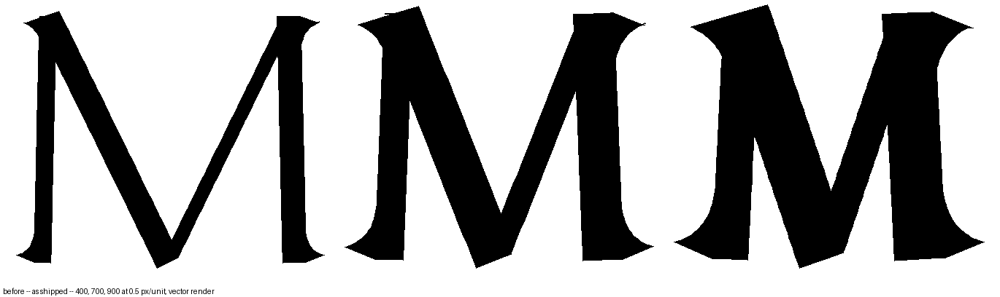
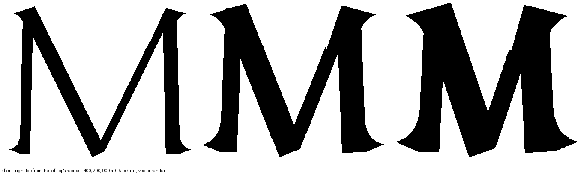
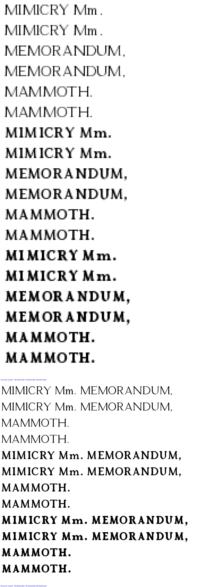

"M needs to have symmetrical stem tops, based on left top." The left top is untouched; the right top now takes the left’s recipe on its own strokes — the wedge projects past the stem by what the left’s does, the peak is the inner stroke’s inner corner, the thick stem’s inner shoulder is cut. Every roman weight, the 400 included; the italic M is its own and unchanged.
| weight | right serif past the left’s, before | after | peak over the cap line, left / right before | after |
|---|---|---|---|---|
| 400 | +7 units | 0 | 17 / 0 | 17 / 17 |
| 700 | +28 | 0 | 23 / 0 | 23 / 23 |
| 900 | +46 | 0 | 25 / 0 | 25 / 25 |


